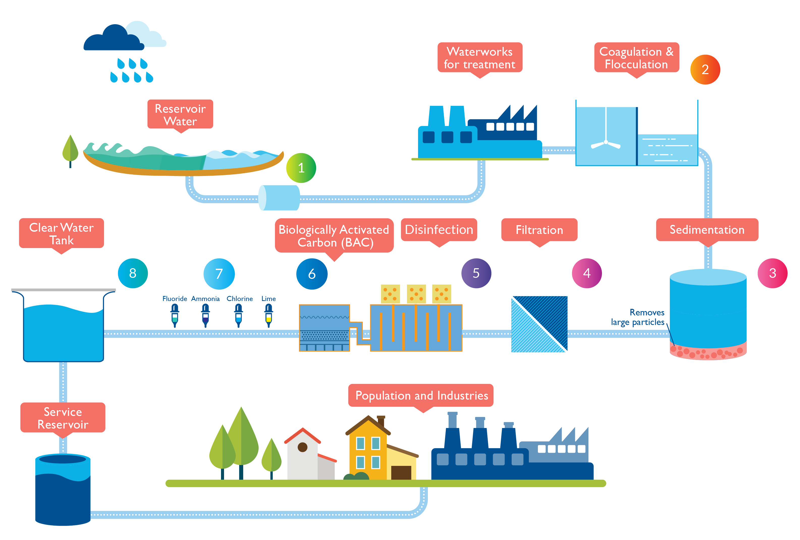
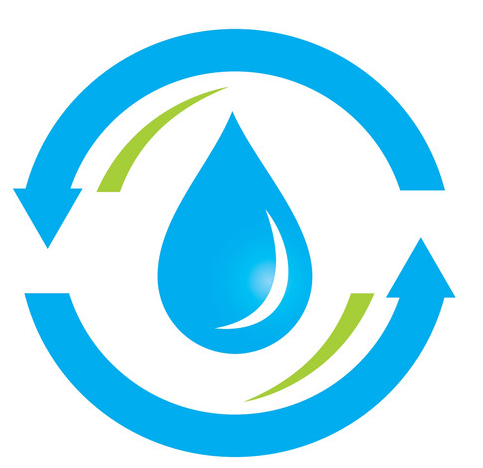
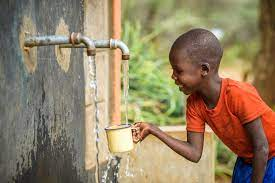

Waste Water Treatement
INTRODUCTION
Water is considered as the most important and priceless commodity on planet Earth. Water on earth moves continually through the water cycle of evaporation and transpiration, condensation, precipitation and runoff, usually reaching the sea. It is one of the most essential thing that is required for every living being. In order to develop a healthy and hygienic environment, water quality should be monitored such that it lies within the respective standards.Wastewater is liquid waste discharged by domestic residences, commercial properties, industry, agriculture, which often contains some contaminants that result from the mixing of wastewater from different sources. Wastewater obtained from various sources need to be treated very effectively in order to create a hygienic environment. If proper arrangements for collection, treatment and disposal of all the waste produce from city or town are not made, they will go on accumulating and create a foul condition that the safety of the structures such that building, roads will be damaged due to accumulation of wastewater in the foundations. In addition to this, disease causing bacteria will breed up in the stagnant water and the health of the public will be in danger.
The principal aim of wastewater treatment is generally to allow human and industrial effluents to be disposed of without danger to human health or unacceptable damage to the natural environment. Therefore in the interest of the community of the town or city it is most essential to collect, treat and dispose of all the wastewater of the city in such a way that it may not cause harm to the people residing in the town. The extent and the type of treatment required, however depends on the character and quality of both sewage and sources of disposal available.
The sewage after treatment may be disposed either into a water body such as lakes, streams, river, estuary and ocean or into land. It may be used for several purposes such as conservation, industrial use or reclaimed sewage effluent in cooling systems, boiler feed, process water, reuse in agriculture, horticulture, sericulture, watering of lawns. Wastewater reuse is becoming increasingly popular, especially in geographies where potable water is in short supply.
Reduction of strength of domestic wastewater using two different bed materials Areca Husk fibre and Agava sisalana fibre as a filter media is one such type of treatment method adopted. The utilization of fixed films for wastewater treatment process has been increasingly considered due to inherent advantages over suspended growth system. The present work is intended to study the application of the comparative study between the fibres ie., Areca fibre and Agava sisalana as a fixed bed for treating domestic wastewater and to know the comparative removal efficiency of COD, BOD ,nitrate, sulphate, chloride with conventional gravel bed in a small volume reactor.
Areca husk fibre is a versatile natural fibre extracted from mesocarp tissue, or husk of the areca fruit. It belongs to the species areca catechu L., under the family palmacea and originated in Malaya Peninsular, east India. Sisal fibre (Agave sisalana species) is obtained from the leaves of this plant. The lustrous strands, usually creamy white, average from 80 to 120 cm in length and 0.2 to 0.4 mm in diameter. Sisal fibre is fairly coarse and inflexible. It is valued for cordage use because of its strength, durability, ability to stretch, affinity for certain dyestuffs, and resistance to deterioration in saltwater.
This method of treatment adopted using Areca husk and Agava sisalana fibres as a filter media follows the principle of trickling filter in which wastewater is made to trickle over a filter media containing seeding agent, due to biological action, the inorganic compounds present in wastewater gets decomposed resulting in the reduction of strength of the wastewater.
Importance of water
Water is vital to the existence of all living organisms, but this valued resource is increasingly being threatened as human populations grow and demand more water of high quality for domestic purposes and economic activities. Among the various environmental challenges of that India is facing this century, fresh water scarcity ranks very high. The key challenges to better management of the water quality in India are temporal and spatial variation of rainfall, improper management of surface runoff , uneven geographic distribution of surface water resources, persistent droughts, overuse of groundwater, and contamination, drainage, and salinization and water quality problems due to treated, partially treated, and untreated wastewater from urban settlements, industrial establishments, and run-off from the irrigation sector besides poor management of municipal solid waste and animal dung in rural areas.Hyro-power Plant
Hydroelectric power is a renewable energy source which harnesses the power of moving water to produce electricity.A hydroelectric dam converts the potential energy stored in a water reservoir behind a dam to mechanical energy—mechanical energy is also known as kinetic energy. As the water flows down through the dam its kinetic energy is used to turn a turbine.
The generator converts the turbine’s mechanical energy into electricity. This electric energy then goes through various transmission processes before it reaches you. 
WASTEWATER GENERATION AND TREATMENT
It is estimated that about 38,254 million litres per day (MLD) of wastewater is generated in urban centres comprising Class I cities and Class II towns having population of more than 50,000 (accounting for more than 70 per cent of the total urban population). The municipal wastewater treatment capacity developed so far is about 11,787 MLD, that is about 31 per cent of wastewater generation in these two classes of urban centres. The status of wastewater generation and treatment capacity developed over the decades in urban centres. In view of the population increase, demand of freshwater for all uses will become unmanageable. It is estimated that the projected wastewater from urban centres may cross 120,000 MLD by 2051 and that rural India will also generate not less than 50,000 MLD in view of water supply designs for community supplies in rural areas. However, wastewater management plans do not address this increasing pace of wastewater generation.
Central Pollution Control Board (CPCB) studies depict that there are 269 sewage treatment plants (STPs) in India, of which only 231 are operational, thus, the existing treatment capacity is just 21 per cent of the present sewage generation. The remaining untreated sewage is the main cause of pollution of rivers and lakes. The large numbers of STPs created under Central Funding schemes such as the Ganga Action Plan and Yamuna Action Plan of National River Action Plan are not fully operated.
The development process in India is gaining momentum and the rural population which is devoid of basic infrastructural facilities will have to be given parity in terms of water supply and sanitation. This process of change is likely to generate huge volume of wastewater in rural areas as well. It would be appropriate to design water and wastewater management plans optimally so that competing pressures on water resources can be eased.
There is a need to plan strategies and give thrust to policies giving equal weightage to augmentation of supplied water as well as development of wastewater treatment facilities, recycling, recovery, recharging, and storage. The future of urban water supply for potable uses will depend majorly on efficient wastewater treatment systems, as the treated wastewater of upstream urban centres will be the source of water for downstream cities.
Other meanings

It's not just about saving water but also about cleaning it.
- To make it safe for human consumption: Water that is contaminated with harmful substances such as bacteria, viruses, and chemicals can be dangerous to human health. Cleaning water removes these contaminants, making it safe for consumption.
- To protect the environment: Contaminated water can harm aquatic life and other wildlife. Cleaning water before it is released back into the environment can help protect these ecosystems.
- To prevent the spread of disease: Dirty water can spread diseases such as cholera, dysentery, and typhoid. Cleaning water can help prevent the spread of these diseases.
- To improve sanitation: Clean water is essential for sanitation purposes such as washing hands, bathing, and cleaning clothes.
- To support economic development: Clean water is necessary for agriculture, industry, and other economic activities. By cleaning water, we can ensure that these activities have access to the water they need to thrive.
Never waste even a drop of water. No water, no life. No blue, no green. Hold your grip and stop that drip...
Why cleaning of water is important?
Drinking water
The report said that in 2017, 5.3 billion people—representing 71% of the population of the world—used a "safely managed drinking-water service—one that is "located on premises, available when needed, and free from contamination".
By 2017, 6.8 billion people—representing 90% of the world's population—used "at least a basic service", which included "an improved drinking-water source within a round trip of 30 minutes to collect water". However, in 2017, there were still 785 million people who lacked "even a basic drinking-water service, including 144 million people who [were] dependent on surface water."
The report said that approximately 2 billion people used a "drinking water source contaminated with feces".The report warned that diseases, including "diarrhoea, cholera, dysentery, typhoid, and polio" are transmitted by contaminated water, which cause about 485, 000 diarrhoeal deaths each year.It cautioned that 50% of the global population will be "living in water-stressed areas" by 2025.
By 2017, eighty countries provided access to clean water for more than 99% of their population.From 2000 to 2017, the global population that lacked access to clean water decreased from nearly 20% to roughly 10%.
Sanitation and hygiene
As of 2017, 22% of health care facilities in the least developed countries had no water service, with similar numbers lacking sanitation and waste management services.
The statistic in the 2017 baseline estimate by the JMP is that 4.5 billion people currently do not have safely managed sanitation.
Globally, the proportion of the population using safely managed sanitation services increased from 28 percent in 2000 to 45 percent in 2017. Latin America and the Caribbean, sub-Saharan Africa, and East and Southeast Asia recorded the largest increase. In total, there are still 701 million people around the world who still had to practice open defecation in 2017.This number had reduced in 2020 to 673 million persons who practised open defecation.
Cleaning of water is important because it removes harmful contaminants and impurities that can be dangerous to human health and the environment. Water from natural sources such as rivers, lakes, and groundwater can contain a variety of pollutants including bacteria, viruses, parasites, chemicals, and heavy metals.
Drinking contaminated water can lead to a range of health problems including diarrhea, cholera, typhoid, and dysentery. Additionally, polluted water can harm aquatic ecosystems and the wildlife that depend on them.
Water treatment processes such as filtration, sedimentation, disinfection, and chemical treatment can effectively remove these harmful pollutants and make the water safe for consumption. By cleaning and treating water, we can ensure that it is safe and healthy for both humans and the environment.
Moreover, cleaning water is also essential for industries that rely on water in their production processes. Water that is contaminated with pollutants can cause machinery to malfunction and products to be compromised, resulting in financial losses.
In summary, cleaning of water is essential to protect human health, the environment, and industrial processes that depend on clean water.

Process Of Water Treatement Plant
Water treatment plants generally involve a series of processes designed to remove impurities and contaminants from raw water before it can be safely consumed or used for industrial purposes. Here are some of the key processes typically used in water treatment plants:
- This process involves adding chemicals such as alum or ferric chloride to the raw water to create particles that attract impurities and form larger clumps or "flocs". This makes it easier to remove impurities from the water in subsequent processes.
- Once the water has been treated with coagulants and flocculants, it is allowed to settle in a sedimentation tank. The heavier flocs sink to the bottom of the tank, leaving clearer water at the top.
- The water is then passed through a series of filters, which can be made of sand, gravel, or activated carbon. The filters remove any remaining impurities that were not removed by sedimentation.
- In this stage, disinfectants such as chlorine or ozone are added to the water to kill any remaining bacteria or viruses. This is a critical step in ensuring that the water is safe to drink.
- In some regions, fluoride is added to the water at this stage to help prevent tooth decay.
- Depending on the source of the water and the treatment process, the pH of the water may need to be adjusted to ensure it is within safe limits.
- Finally, the treated water is stored in reservoirs before being distributed to homes and businesses through a network of pipes.
Coagulation and flocculation:
Sedimentation:
Filtration:
Disinfection:
Fluoridation:
PH adjustment:
Storage and distribution:

Photo by Alana Elliott
What next?
If you found this article useful, might you consider telling your friends or mentioning it on your website?
You might also be interested in our other articles on water management.
- Thank you for visiting our website visit us again.
- Take a look at top of the page for water treatement chart chart of waste water treatement.